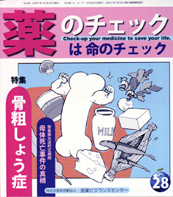

No.28 特集 骨粗しょう症 2007年10月 発行
20〜30年くらい前までは、腰の曲がっているおばあさんは身近に普通に見かけたものですが、
今や、あまり見かけなくなりました。なのに、最近、骨粗鬆（こつそしょう）症の話題に事欠きません。
なぜ今、骨粗鬆症なのか。
ここにも、病気でもない人を病気にする、いわゆる「病気作り」が行われています。
「骨粗鬆症が心配な、あなた！」「骨密度を測定しましょう！」「なりやすいと診断されても安心！」
「骨粗鬆症を予防する薬を飲めば大丈夫！！！」――という具合です。
いったい、骨粗鬆症とはどういう状態で、なぜ症状が起きるのか、昔に比べて患者は増えているのか、
検診で早期発見する意味はあるのか、薬は本当に効果があるのか、害はないのか？
徹底的に調べてみましょう。
もくじ
特集 骨粗しょう症
■骨粗しょう症は減っている―浜さんに聞く ―編集部
■骨粗しょう症を予防する食事 ―山本みどり
■骨粗しょう症や骨折を起こしやすい薬（リスト付き）
■骨粗しょう症の薬を評価する ―浜 六郎
パート１：カルシウム剤、ビタミンD剤、ラロキシフェン、ビスフォスフォネート、カルシトニン
パート２：ホルモン補充療法
■骨粗しょう症に使われる薬剤の適応症と評価のリスト
■患者用薬の説明書：アレンドロン酸／ラロキシフェン
短期連載
■2006年度の医療制度改革
第2回「特定検診」＝メタボ検診は有効でない ―林 敬次
不定期連載
■新・患者の知恵袋 「糖尿病でも快適な生活を」 ―奥西秀樹
■編集長インタビュー 奈良県大淀町立病院 母体死亡事故の真相
高崎晋輔さんに聞く
連載
■映画のなかのクスリ（２１） 鎮静剤 ―木元康介
■みんなのやさしい生命倫理 ２８
EBMの生命倫理（７） ―谷田憲俊
■EBM超入門 エビデンスにはレベルがある その３ ―浜 六郎
その他
■コーヒー無礼区
■行ってきました
薬害肝炎・総理決断要求行動！
■海外情報
１．英国：アリセプト使用制限
２．米国：未承認薬へのアクセス権否決
■書評
『患者の訴え・症状からわかる薬の副作用』／『痛みと麻痺を生きる』
■質問箱 １ 高血圧の薬を変えていいか？
２ 肌荒れ？ 化粧まけ？ 更年期？
■質問箱・番外編 読者モニターからの質問あれこれ
■イベント情報
■読者の声
■用語の解説
編集長インタビュー より
奈良県大淀町立病院 母体死亡事故の真相 高崎晋輔さんに聞く
2006年8月、陣痛促進剤（以下、分娩誘発剤）を投薬されて後に意識不明で重体になった高崎実香さんは、
転送先の病院で帝王切開により男児を出産し、その後亡くなりました。
多くの病院に転送を断られたことから、産科の救急医療における問題として新聞などでは大きく取り上げられました。
しかし、この事故の発端は、不要な分娩誘発剤を使用したことにあると本誌は考えています。
インタビューでは、投薬から転送までの経緯を伺うとともに、提訴するに至った心境をお聞きしました。
（高崎さん宅へ出向き、実香さんの夫の晋輔さんと、晋輔さんの父憲治さんにお話を伺いました）
（以下、引用省略）
詳しくは本誌で。